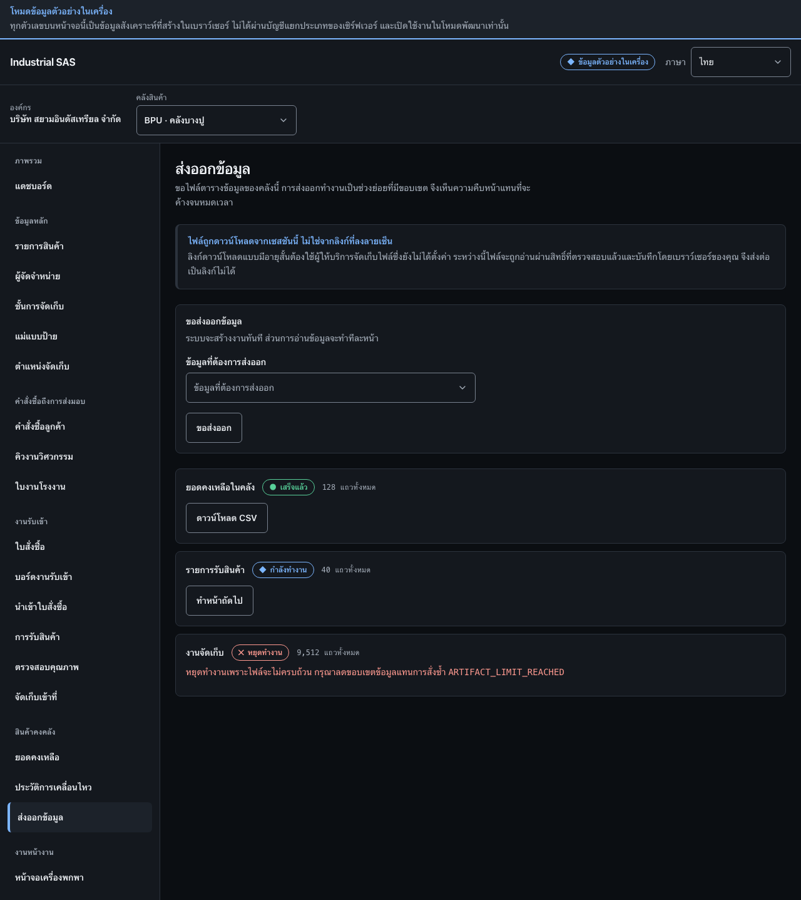

ส่งออกข้อมูลExport data
ขอไฟล์ CSV ของคลังนี้ ติดตามสถานะงานส่งออกเป็นช่วง แล้วดาวน์โหลดเมื่อเสร็จRequest a CSV file for this warehouse, follow the chunked job status, and download it when finished.
สิ่งที่ต้องมีก่อนเริ่มBefore you start
- เลือกคลังสินค้าที่ต้องการส่งออกข้อมูลแล้วThe warehouse to export is selected
- มีสิทธิ์ส่งออกข้อมูลของคลังนั้นPermission to export that warehouse's data

ขั้นตอนSteps
- ที่กรอบ 1 เลือกชนิดข้อมูล แล้วกด “ขอส่งออก”In box 1, choose the data set, then press “Request export”.
- ที่กรอบ 2 ตรวจสอบสถานะงาน: “เสร็จแล้ว” กด “ดาวน์โหลด CSV”, “กำลังทำงาน” กด “ทำหน้าถัดไป” จนจบ, “หยุดทำงาน” อ่านเหตุผลและลดขอบเขตข้อมูลก่อนเริ่มใหม่In box 2, check the job status: “Finished” — press “Download CSV”; “Running” — press “Process next page” until it ends; “Stopped” — read the reason and narrow the data set before starting again.
- ตรวจสอบจำนวนแถวก่อนใช้ไฟล์Check the row count before using the file.
ตรวจว่างานสำเร็จอย่างไรHow to tell it worked
- งานส่งออกมีสถานะ “เสร็จแล้ว” และไฟล์ CSV ถูกดาวน์โหลดพร้อมจำนวนแถวที่ตรงกันThe export job reads “Finished” and the downloaded CSV has the row count shown.
- งานที่หยุดทำงานจะไม่ให้ไฟล์ที่ถูกตัดทอน แต่จะแจ้งเหตุผลให้ลดขอบเขตข้อมูลA stopped job never hands over a truncated file; it states the reason so the data set can be narrowed.